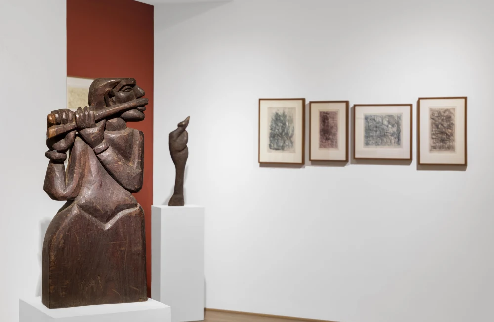
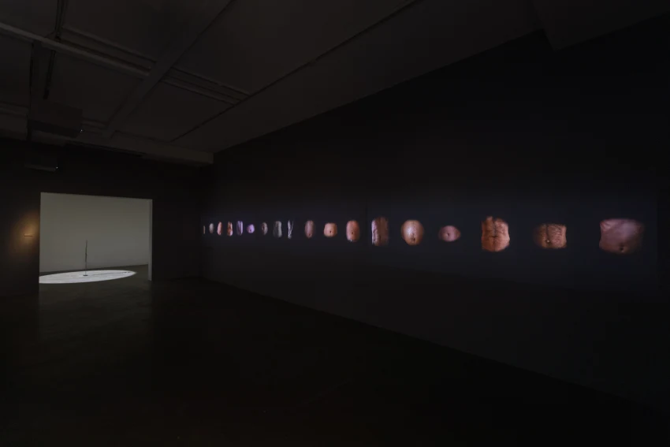

|  | LEELA MUKHERJEE: A GUILELESS MODERNIST D-40 DEFENCE COLONY, NEW DELHI 20 MARCH - 30 APRIL 2024 "Born in Sind and educated at Besant School in Benaras, Bombay University andSantiniketan, Leela Mukherjee (1916-2002), along with Pilloo Pochkhanawala and Meera Mukherjee, belongs to the first generation of modern Indian women sculptors. Trained under Ramkinkar Baij and KulasundarShilakarmi, a traditional Nepalese sculptor, and working persistently from 1949 onwards, shecarved a space for herself as a sculptor working primarily in wood. |
| THE COINCIDENCE OF TIME AND BEING: RANBIR KALEKA AND SUMAKSHI SINGH D-53 DEFENCE COLONY, NEW DELHI 20 MARCH - 13 APRIL 2024 The exhibition attempts to capture that fragile and unsettling moment in time of not knowing yet filled with promise in a distinctly ordered world. The juxtaposition of the two artists works may be seen as a mediation of our relationship with time as a physical dimension of our universe and a dynamic, fluctuating process of change, that coincides with our conscious being. Both artists keep our vulnerability from us by creating regenerative landscapes, or alchemical transformations of the existential. They present an illusion of life so moving and complete in time and memory, that it is disconcerting, and yet we surrender ourselves to it. The works speak of opaque depth and mystery, dimness and shadow, metaphysical enigma, and death as a mirror to life. They suspend us between opposites, questioning our existence through persistence of time. Delving deeper into their works, one is left with the question: does this coincidence of time and being then provide an argument against belief in a purposeful divine agent? |
 |